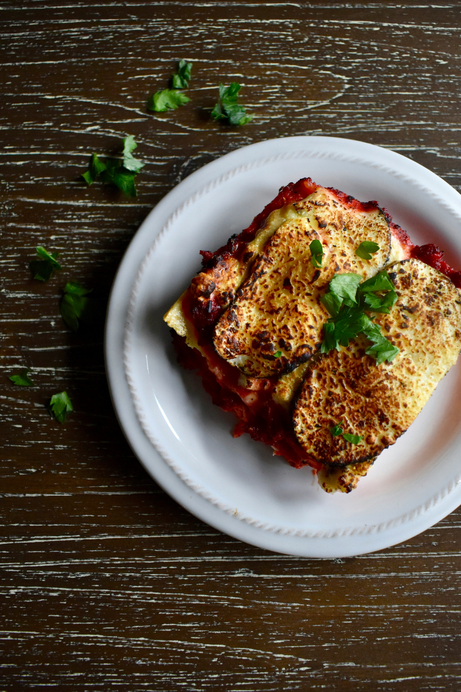

Lasagna

Description
Lasagna are a type of wide, flat pasta. It is an Italian dish made of stacked layers of this flat pasta
alternating with fillings such as meat sauce and other vegetables, cheese and seasonings
and spices such as garlic, oregano and basil.
Ingredients
- The meat sauce
- Olive oil
- Onion & Garlic
- Carrot
- Celery
- Beef
- Canned tomato & Tomato paste
- Red wine
- Seasonings
- Beef bouillon cubes
- Bay leaves
- Thyme oregano
- Worcestershire sauce
- The white sauce
- Assembling
Steps
- Meat sauce
- Heat oil, and Add garlic, onion, celery, and carrots.
- Add beef.
- Once the beef has all turned brown, add the remaining meat sauce ingredients EXCEPT the sugar.
- Stir then adjust the heat.
- The meat sauce is ready when the is really tender.
- Adjust salt and pepper to taste, and add sugar if required.
- White sauce
- Warm milk in a saucepan.
- Melt butter, and flour and mix constantly.
- Turn heat up to medium high. Stir occasionally.
- Remove from heat, add cheese, nutmeg, salt and pepper.
- Mix until the cheese is melted.
- Assemble
- Preheat oven to 180 °C.
- Use a 33 x 22 x 7 cm / 13 x 9 x 2.5" baking dish.
- Smear a bit of meat sauce, then cover with lasagna sheets.
- Spread over 21/2 cups of meat sauce, then drizzle over 1 cup of Cheese cause.
- Sprinkle with Mozzarella then bake.
Home